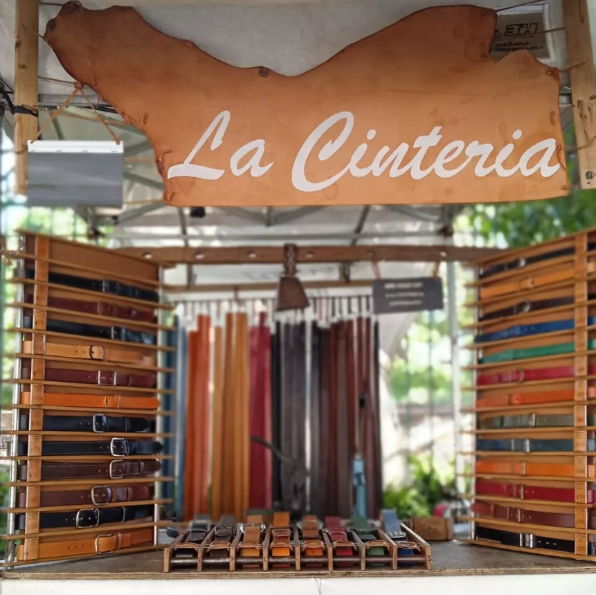
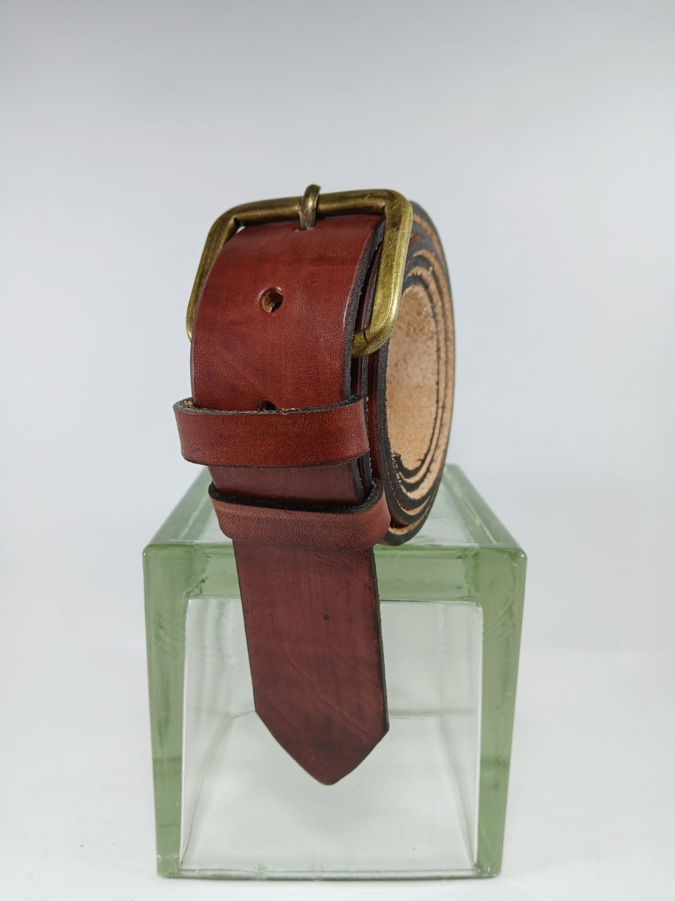
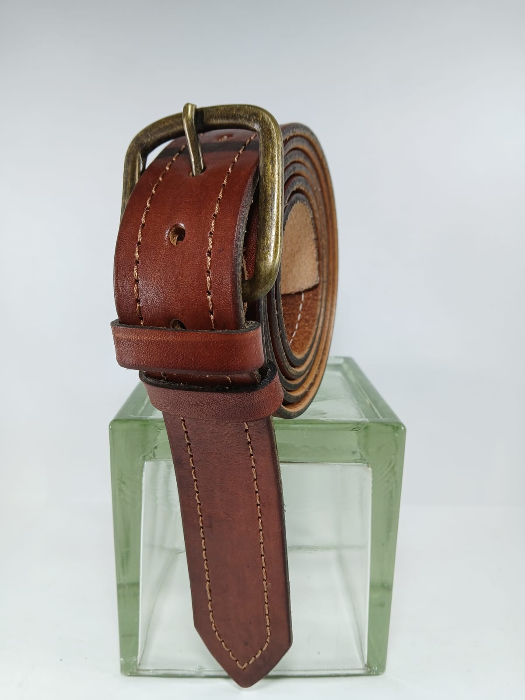
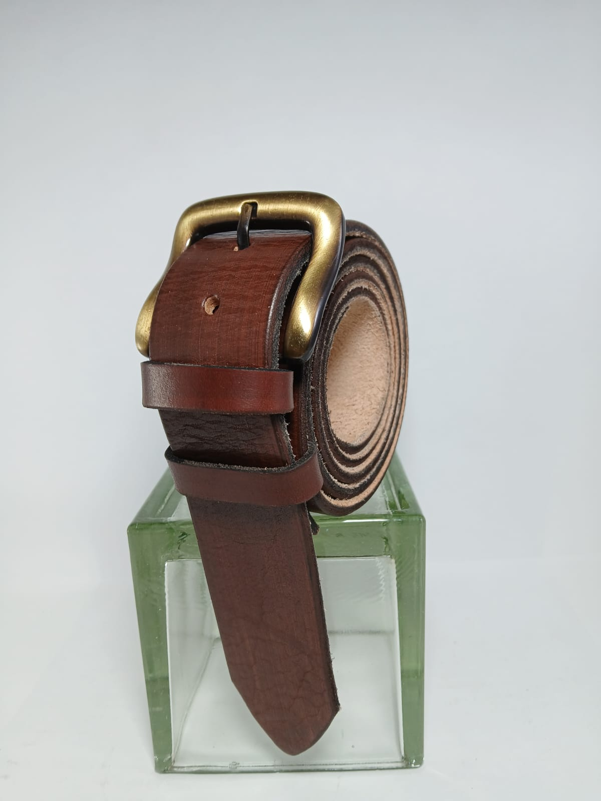
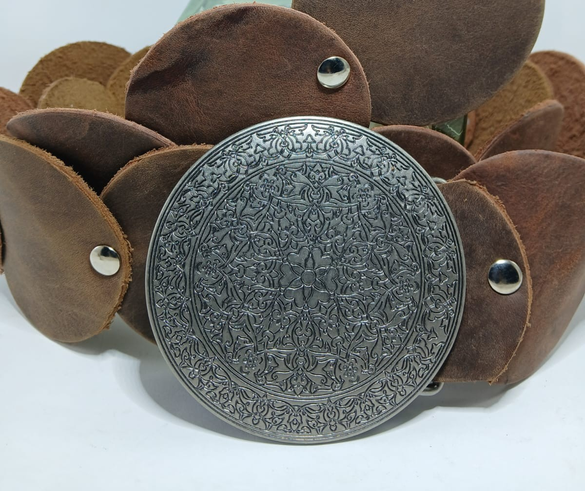

La Cintería
Cintos artesanales de cuero
100% vacuno
hechos a medida

Cintos paso 2.5 cm
Cintos paso 3 cm
Cintos cocidos paso 3 cm

Cintos paso 3.5 cm

Cintos cocidos paso 3.5 cm

Cintos paso 4 cm

Cinto especial